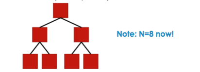

SOFT351 - MPI Communications
Date: 24-11-16
Connection Topologies
- If we have multiple processing cores
- How can they be connected together?
- If on same PC, they can communicate via main memory bus
- Effectively every core is connected directly to every other core
Networking hardware
- Once you have computations running in parallel across multiple machines
Network topologies
- Let's assume connections are direct
- I.e there is a physical wire or fibre between any two connected machines
- How should these connections be organised?
- Simplest option is a fully connected network: connect every node to every other node
Fully connected network
- 6 pcs all connected to every other pc
Properties of this network:
- Diameter is the maximum path length between a pair of nodes
- This is best possible diamter
- Higher values cause more latency
- Bisection width of the network is the minmum number of links you need to cut to divide the network into two equal halves
- Our example cut down the middle means you have to cut 9 connections
- So bisection width = 9
- A high value like this is better: more links = more resilience
- The bisection bandwidth is the bisection width multiplied by the bandwidth of a link
- So in our network, if links were 10GB/s then the bisection bandwidth would be 9 * 10GB/s = 90GB/s
This is relatively high which is good, affects the performance of many parallel algorthims
- valency is how many connections each node makes
- In this case, each node connects to 5 others, so valency = 5
- in general, valency = N - 1
- High valency is generally bad - if machines are directly connected then you need this many network ports / cables for each machine
- Maximum number of ports is 6 or 7
This means fully connected directly connected network is pretty unfeasible on a large scale
- Link count is how many connections the network has in total
- In this case link count = 15
- In general, link count = valency * number of nodes / 2
- The fully connected network is also very bad in this area
- Shows how many wires you need
Alternatives
- Fully connected network isn't practical
- Alternatives
Ring Topology
Each node is connected to two neighbours, forming a closed loop
- What is the diameter?
- In this case: 3
- in general: N/2 (have to traverse half the network)
Not great! For a large network, messages may have high latency
- What is the bisection?
- In this case: 2, 2 * link bandwidth
- In general, 2 if it is even
Not great! Not resilient to broken links, low bandwidth
- What is the Valency?
- In this case: 2
- In general: 2
Great! only need two ports per machine
- What is the link count?
- In this case: 6
- In general: N
Great! Only need as many cables as there are machines
Summary: - Well on practical but poor on performance
Performance - Low bisection width and bisection bandwidth - high diameter
pratical - Cheap to implement - Only need two network ports per machine (low valence) - Only need one cable per machine (low link count)
Thin tree topology
- Arrange nodes into a tree where each parents has M children
- Lets take M=2 binary tree

- What is the diameter - this case: 4 - in general: 2 log2 (n + 1) / 2 - Not bad grows less than linearly with N
Thin tree: summary
Distributing data